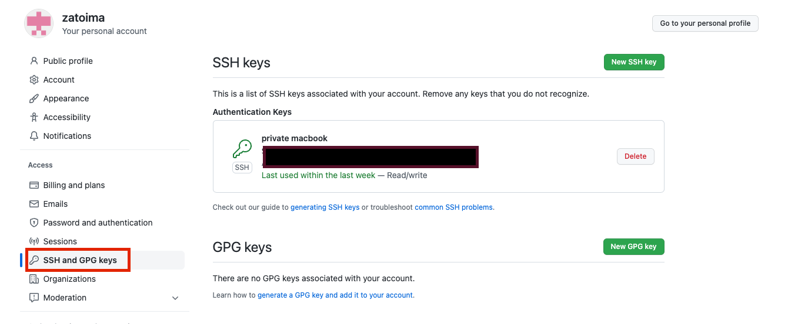

Github Pages Hugoの新端末でのセットアップメモ
WindowsからMacにHugoのブログ執筆環境を移行した際の環境構築（移行）メモです。
OS確認
xxxx@xxxx blog % sw_vers
ProductName: macOS
ProductVersion: 13.0.1
BuildVersion: 22A400
hugoのインストール
brew install hugo
作業用ディレクトリの作成
mkdir -p /Users/jimazato/work/hugo/zatoima.github.io
Githubの初期設定
公開鍵を生成してGithubのSSH and GPG Keysに登録する
cd $HOME/.ssh && ls
ssh-keygen -t rsa -f id_rsa_git
cat id_rsa_git.pub

ssh接続の際「~/.ssh/id_rsa」、「~/.ssh/id_dsa」、「~/.ssh/identity」しかデフォルトではチェックしないので、デフォルトから変更した場合は$HOME/.ssh配下にconfigファイルを作成し下記のように記載する。
jimazato@XXXXXXX .ssh % cat config
Host github github.com
HostName github.com
IdentityFile ~/.ssh/id_rsa_git #ここに自分の鍵のファイル名
User git
これをやっていない場合、pushやpull時に下記のようにエラーとなってしまう。
jimazato@XXXXXXX zatoima.github.io % git pull origin master
This key is not known by any other names
Are you sure you want to continue connecting (yes/no/[fingerprint])? yes
Warning: Permanently added 'github.com' (ED25519) to the list of known hosts.
git@github.com: Permission denied (publickey).
fatal: Could not read from remote repository.
その他のGithub側の初期設定。
git config --global user.name zatoima
git config --global user.email xxxx.xxxxx@gmail.com
git remote set-url origin git@github.com:
git remote set-url origin git@github.com:zatoima/zatoima.github.io.git
こんな感じになっていると思う
jimazato@XXXXXXX zatoima.github.io % git remote -v
origin git@github.com:zatoima/zatoima.git (fetch)
origin git@github.com:zatoima/zatoima.git (push)
ここまで来たらpullやpush、clone等をして設定の正しさを確認する。
関連しているかもしれない記事
- 本ブログへのアクセス数メモ 2022年10月
- Hugo wowchemyのシンタックスハイライト変更
- Hugo AcademicのError failed to resolve output formatエラーについて
- Hugo wowchemy（旧Academic）における記事幅の調整方法
- Hugoにおける実行ファイルのnot foundについて